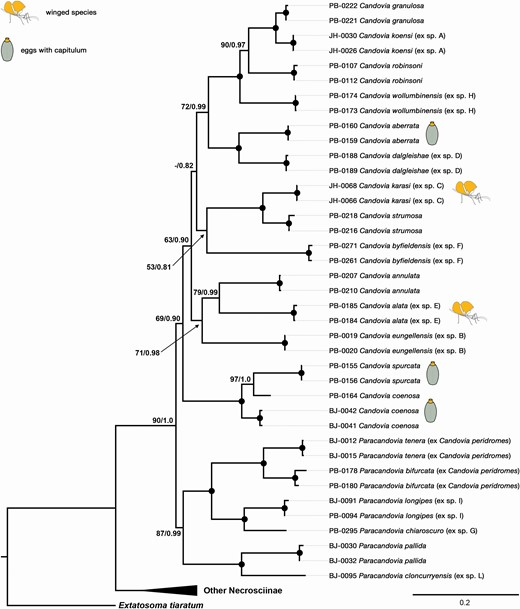

Macroevolutionary Analyses Provide New Evidence of Wings Evolution as a Reversible Process in Phasmids
Giobbe Forni1, Jacopo Martelossi1, Pablo Valero, Frank H. Hennemann, Oskar Conle, Andrea Luchetti, Barbara Mantovani
1 These authors contributed equally to this work
Abstract:
Abstract.—The concept that complex ancestral traits can never be recovered after their loss is still widely accepted, despite phylogenetic and molecular approaches suggest instances where phenotypes may have been lost throughout the evolutionary history of a clade and subsequently revertedback in derived lineages.Oneof thefirst andmost notable examples of such a process is wing evolution in phasmids; this polyneopteran order of insects, which comprises stick and leaf insects, has played a central role in initiating a long-standing debate on the topic. In this study, a novel and comprehensive time tree including over 300 Phasmatodea species is used as a framework for investigating wing evolutionary patterns in the clade. Despite accounting for several possible biases and sources of uncertainty, macroevolutionary analyses consistently revealed multiple reversals to winged states taking place after their loss, and reversibility is coupled with higher species diversification rates. Our findings support a loss of or reduction in wings that occurred in the lineage leading to the extant phasmid most recentcommonancestor, and brachyptery is inferred to be an unstable state unless co-optedfor nonaerodynamic adaptations. We also explored how different assumptions of wing reversals probability could impact their inference: we found that until reversals are assumed to be over 30 times more unlikely than losses, they are consistently inferred despite uncertainty in tree and model parameters. Our findings demonstrate that wing evolution is a reversible and dynamic process in phasmids and contribute to our understanding of complex trait evolution. [Dollo’s law; Phasmatodea; phylogenetic comparativemethods; polyneoptera; reversals; wing.

Now published in Systematic Biology!
Forni, G., Martelossi, J., Valero, P., Hennemann, F.H., Conle, O.,
Luchetti, A., Mantovani, B., 2022. Macroevolutionary Analyses Provide
New Evidence of Phasmid Wings Evolution as a Reversible Process.
Systematic Biology syac038. https://doi.org/10.1093/sysbio/syac038
Taxonomic revision of the Australian stick insect genus Candovia (Phasmida: Necrosciinae): insight from molecular systematics and species-delimitation approaches”
Giobbe Forni, Alex Cussigh, Paul D Brock, Braxton R Jones, Filippo Nicolini, Jacopo Martelossi, Andrea Luchetti, Barbara Mantovani
Abstract:
The Phasmida genus Candovia comprises nine traditionally recognized species, all endemic to Australia. In this study, Candovia diversity is explored through molecular species-delimitation analyses using the COIFol gene fragment and phylogenetic inferences leveraging seven additional mitochondrial and nuclear loci. Molecular results were integrated with morphological observations, leading us to confirm the already described species and to the delineation of several new taxa and of the new genus Paracandovia. New Candovia species from various parts of Queensland and New South Wales are described and illustrated (C. alata sp. nov., C. byfieldensis sp. nov., C. dalgleishae sp. nov., C. eungellensis sp. nov., C. karasi sp. nov., C. koensi sp. nov. andC. wollumbinensis sp. nov.). New combinations are proposed and species removed from synonymy with the erection of the new genus Paracandovia (P. cercata stat. rev., comb. nov., P. longipes stat. rev., comb. nov., P. pallida comb. nov., P. peridromes comb. nov., P. tenera stat. rev., comb. nov.). Phylogenetic analyses suggest that the egg capitulum may have independently evolved multiple times throughout the evolutionary history of these insects. Furthermore, two newly described species represent the first taxa with fully developed wings in this previously considered apterous clade.

Now published in Zoological Journal of the Linnean Society!
Forni, G., Cussigh, A., Brock, P.D., Jones, B.R., Nicolini, F.,
Martelossi, J., Luchetti, A., Mantovani, B., 2022. Taxonomic revision of
the Australian stick insect genus Candovia (Phasmida: Necrosciinae):
insight from molecular systematics and species-delimitation approaches.
Zoological Journal of the Linnean Society zlac074. https://doi.org/10.1093/zoolinnean/zlac074